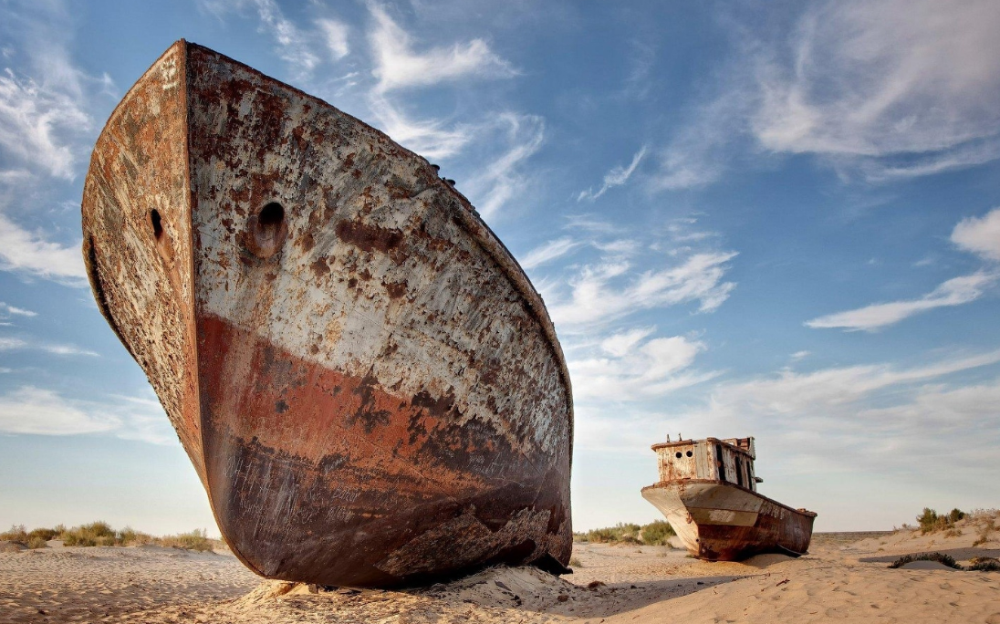
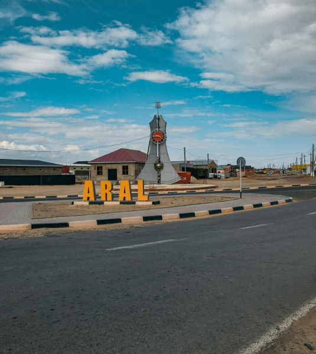

Арал – символ экологической катастрофы и возрождения
Арал – это не только название бывшего четвёртого по величине озера в мире, но и регион, который стал символом экологической катастрофы XX века. Из-за ирригационных проектов в советский период озеро почти полностью высохло, оставив за собой засоленные земли и множество социальных проблем.
- Площадь (в прошлом): более 68 000 км²
- Текущее состояние: разделено на Малый и Большой Арал
- Экосистема: сильно нарушена, однако предпринимаются шаги по восстановлению
Что посмотреть?
- 🌊 Остатки береговой линии и бывшие порты
- 🛳 Кладбище кораблей в Аралске
- 📚 Музей истории Арала и экологической трагедии
- 📷 Этно-туризм и фототуры
Как добраться?
📍 Город Арал, Кызылординская область
🚆 Поездом или автобусом из Кызылорды (около 8 часов)
🚗 Личный транспорт (примерно 450 км)
Интересный факт
🧭 Построенная плотина "Кокарал" частично восстановила уровень воды в Малой части Арала, вернув рыболовство и флору.
Арал – это место памяти, уроков экологии и надежды на восстановление природы 🌍.
ФОТО


